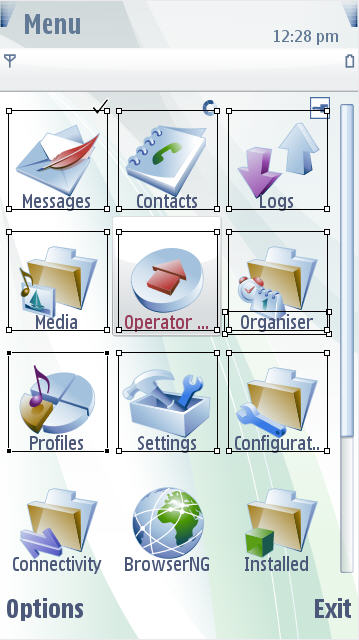

Selection of multiple
components using CTRL key, CTRL-A, or the
multiple select action
You can select multiple components from the editor window holding
the CTRL
key or using CTRL-A
(to select All the components
at once).This is used to enable copying and pasting several
of components between themes.
 Figure:
Selecting Multiple
Components
You can also do the following :
Use Shift
key and select all
components to copy and paste elements in
the components view